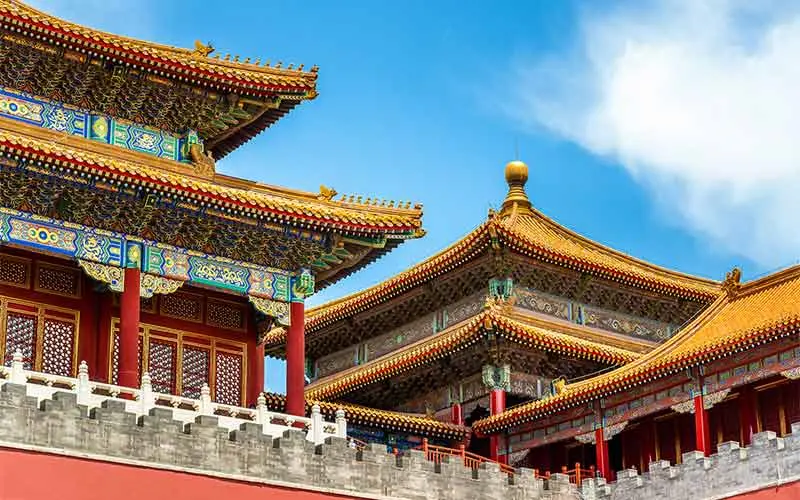
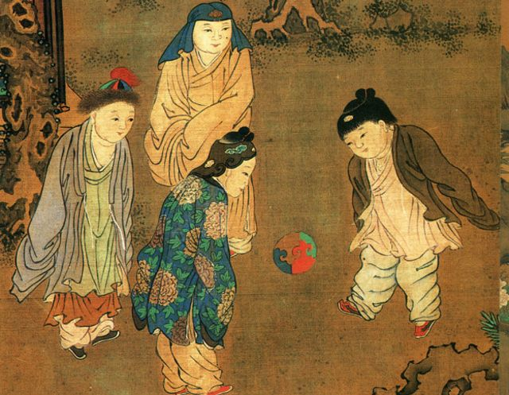

Geografia
El territorio de la República Popular China se extiende en gran parte de Asia Oriental. Es el segundo país más grande del mundo por área territorial, después de Rusia, y es el tercer o cuarto por área total, luego de Rusia, Canadá y, dependiendo de la definición de área total, Estados Unidos. Usualmente se estima el área total de China en alrededor de 9 600 000 km². Con una longitud total de 22 457 km, China posee la frontera terrestre más larga del mundo. Se extiende desde la desembocadura del río Yalu en la frontera con Corea del Norte, hasta el golfo de Tonkín en el límite con Vietnam. China comparte fronteras con catorce naciones, más que ningún otro país, e iguala el número de vecinos de Rusia. Limita con Vietnam, Laos y Birmania en el Sudeste Asiático; con India, Bután, Nepal y Pakistánnota en Asia del Sur; con Afganistán, Tayikistán, Kirguistán y Kazajistán en Asia Central; y con Rusia, Mongolia y Corea del Norte en Asia Oriental. Además, comparte fronteras marítimas con Corea del Sur, Japón, Vietnam, Filipinas y Taiwán.
Cultura
Desde tiempos antiguos, la cultura china ha sido influenciada fuertemente por el confucionismo y las filosofías conservadoras. Durante gran parte de la era dinástica, la oportunidad de subir en la pirámide social se presentaba al obtener un buen desempeño en el prestigioso examen imperial, cuyos orígenes se remontan a la dinastía Han. El énfasis literario de la prueba afectó la percepción general del refinamiento cultural en China, de modo que se pensaba que la caligrafía, poesía y la pintura eran formas de arte superiores a la danza o el teatro. La cultura china ha enfatizado constantemente un sentido profundo de historia y una perspectiva de introspección nacional. Los exámenes y la cultura de méritos aún son muy valorados en la China actual. Los primeros líderes de la República Popular China nacieron durante el orden imperial tradicional, pero fueron influenciados por el Movimiento del Cuatro de Mayo y los ideales reformistas. Buscaban cambiar algunos aspectos tradicionales de la cultura, como la tenencia de las tierras, el sexismo y el sistema de educación confucionista; al mismo tiempo que preservaban otros, como la estructura familiar y la cultura de obediencia al Estado.
Arquitectura
La arquitectura tradicional china está influida por el arte grecobudista del siglo I d. C. Son construcciones generalmente de madera y ladrillo. Las columnas suelen tener una altura baja y carecen de capitel. Las cubiertas cuentan con aleros gruesos y encorvados ligeramente hacia arriba. Además, se usan variadas decoraciones policromadas, como azulejos, baldosines de porcelana, incrustaciones, campanillas y juguetes; con gran variedad de detalles. Después de la creación de la República Popular, la arquitectura se modernizó y en 1980 empezó a diversificarse.
Pintura

La pintura china data de unos 5000 años, época en que los chinos dibujaban imágenes de personas y animales en las rocas con tintes hechos con mineral, y hacían dibujos de diversos objetos de cerámica. Después, grabaron dibujos y motivos místicos en piezas de bronce. Los pocos que se han encontrado nos verifican como era esa pintura; son pintados en seda y se calculan que se pintaron alrededor de unos 2000 años atrás. La pintura china temprana se basa en varios tipos de figuras, teniendo desde figuras humanas hasta representaciones de paisajes con pájaros y plantas. Ya hacia el siglo XVII, se introdujeron pinturas procedentes de Europa en China; a este tipo de arte se lo llamó «pintura de Occidente», y al arte nacional, «pintura tradicional de China». En el Extremo Oriente, la pintura del país es la principal corriente del arte pictórico.
Literatura

La literatura china comenzó siendo una forma de mantener los registros y la adivinación en el hueso oracular. La extensa colección de libros que se han conservado desde la dinastía Zhou demuestran lo avanzados e intelectuales que eran. De hecho, la era de la dinastía Zhou es a menudo vista como un punto importante en el desarrollo cultural chino. Los Cinco Puntos Cardinales son la base de casi todos los estudios principales. Los conceptos cubiertos por los textos clásicos chinos presentan una amplia gama de temas, incluyendo poesía, astrología, astronomía, el calendario, las constelaciones, entre otros. Muchos de estos conceptos chinos, como el yin y yang, el qì, y los cuatro pilares del destino en relación con el cielo y la tierra, fueron teorizados en esos períodos dinásticos. Algunos de los escritos antiguos más importantes son I Ching y Shujing dentro de los Cuatro Libros y los Cinco Clásicos.
Musica y bailes

La música tradicional china se puede dividir en dos grandes ramas: la música clásica y la folclórica. Hasta finales de la dinastía Qing, la música clásica era un lujo de la clase alta, y la gente ordinaria no estaba muy relacionada con este estilo. Generalmente es solo instrumental, se toca con un solo instrumento o en pequeñas agrupaciones que incluyen instrumentos de cuerda, flautas y varios timbales, gongs y tambores. La flauta de bambú y el guqin se encuentran entre los instrumentos más antiguos utilizados en el país. Los instrumentos chinos tradicionalmente se dividen en ocho grupos o bayin (八音), según el material del que están hechos. Las categorías son: seda, bambú, madera, piedra, metal, arcilla, calabaza y cuero. El término guoyue, o música nacional, se volvió popular a principios del siglo XX y se utilizó para englobar toda la música escrita para los instrumentos chinos, en respuesta a los movimientos nacionalistas.
La danza china es un arte que cuenta con muchos estilos y géneros tradicionales y modernos. Puede abarcar desde bailes folclóricos a presentaciones de ópera y ballet y puede ser utilizada en celebraciones públicas, rituales y ceremonias. La danza fue una de las primeras formas de arte desarrolladas en la Antigua China, y algunos estilos tienen sus orígenes en la dinastía Zhou. Al igual que la música, cada grupo étnico tiene sus propias tradiciones de danza folclórica. Algunas de las danzas chinas más conocidas a nivel internacional incluyen la danza del dragón y la danza del león.
Deportes
China cuenta con una de las culturas deportivas más antiguas en el mundo. Existe evidencia de que durante la dinastía Han se jugaba una forma de fútbol llamada cuju. Algunos de los deportes más populares en el país incluyen la artes marciales como el combate de Sanda, el baloncesto, el fútbol, el tenis de mesa, el bádminton, la natación y el snooker. Los juegos de mesa como el go (conocido como weiqi en China), el xiangqi y más recientemente el ajedrez, se juegan a un nivel profesional. Los jóvenes también practican fútbol y baloncesto además China es hogar de un gran número de ciclistas, de hecho en 2012 había más de 470 millones de bicicletas en el país. También son muy populares varios deportes tradicionales como las carreras en barco-dragón, la lucha mongólica y las carreras de caballos. En China se disputan carreras internacionales de automovilismo tales como el Gran Premio de Macao, el Gran Premio de China de Fórmula 1, las 6 Horas de Shanghái del Campeonato Mundial de Resistencia y el ePrix de China de Fórmula E.